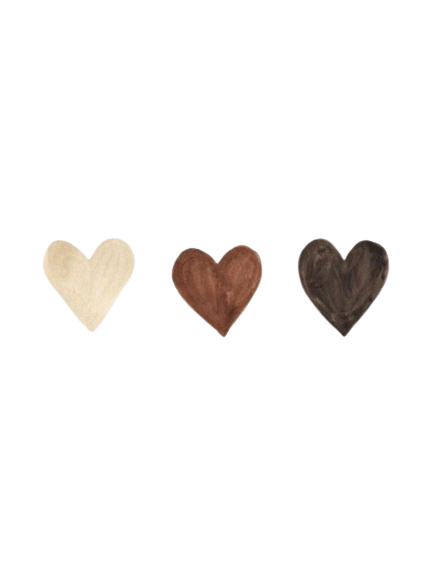

Monara de Almeida Mendes
Me conhecendo de vários ângulos e formas.
Do pessoal ao profissional, da sonhadora à que busca viver cada dia intensamente.
A que mergulhou em tudo que a vida lhe propôs, desde à Engenharia a TI.
A que acreditou e sempre acredita que pode ir além, que pode sempre mais e que nem o céu é o limite.
Conheça uma trajetória de décadas, com poucos clicks.

O processo é lento, mas desistir não acelera.